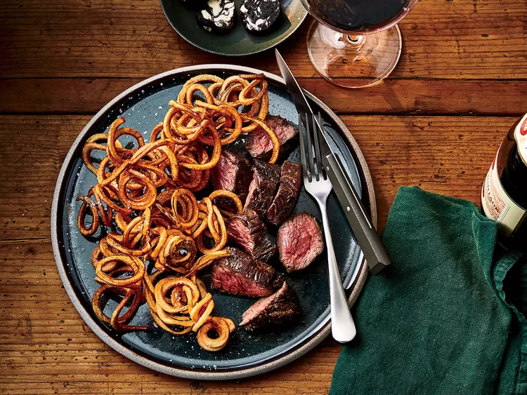

Steak

A savory, delicious way to prepare steak served with the most delicious steak frites.
List of Ingredients
- 1 head Black garlic
- 1/4th cup of Unsalted Butter
- 1 teaspoon brandy
- Kosher salt
- 2 pounds of Russet Potatoes.
- Hanger steak or Grass fed Hanger Steak.
- Peanut or Grapeseed Oil.
- Black Pepper.
- Parsley
Instructions for Steak
- Mash black garlic to a paste. Then add butter, brandy, salt, and then mash until combined.
- Mound spiralized potatoes on a large microwavable plate for 4 minutes, then let cool for 10.
- Pour peanut oil in dutch iven and heat over medium to 375.
- Heat peanut oil in 12 inch skilled on medium high. past the steaks dry, season, and then add the steaks to the skillet. turn every three minutes to evenly sear all sides to a desired degree of doneness.
- Fry potatoes in hot oil in 2-3 batches until fries are golden and crisp.
- Plate and Finish!
Link to Homepage:Homepage
Link to other recipes: